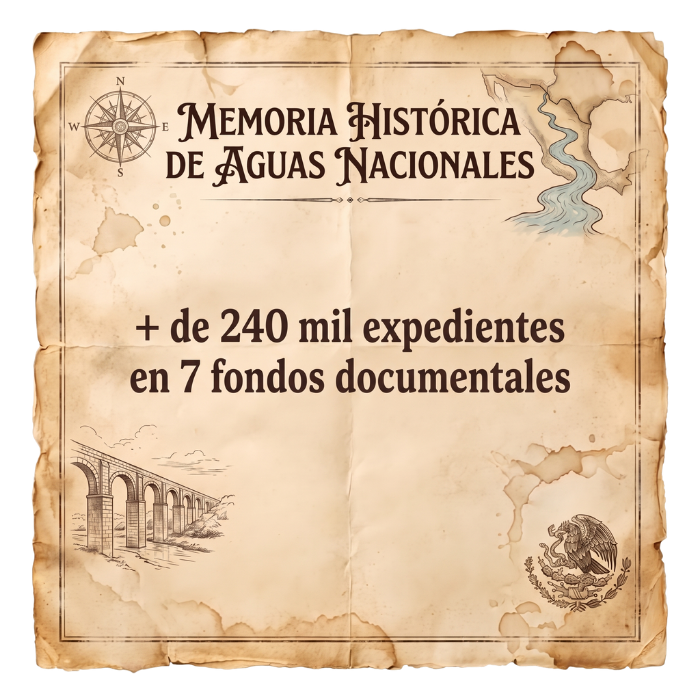
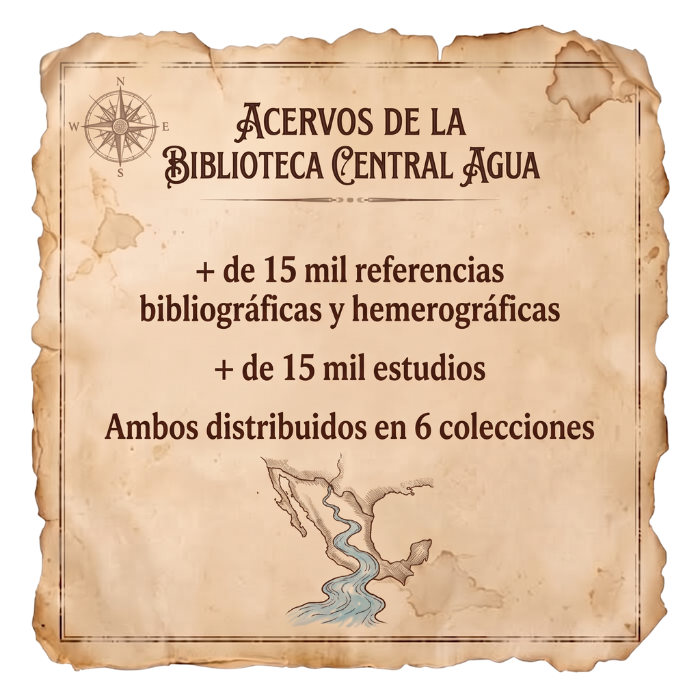
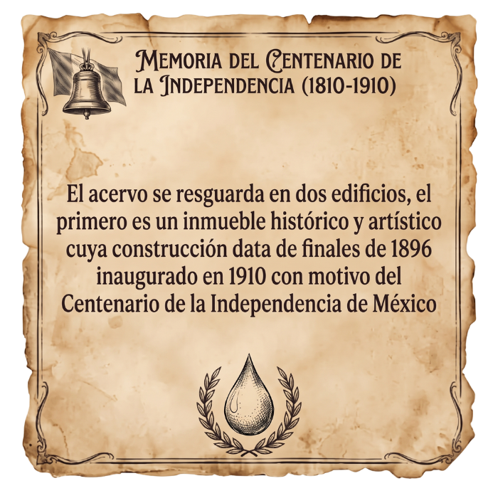
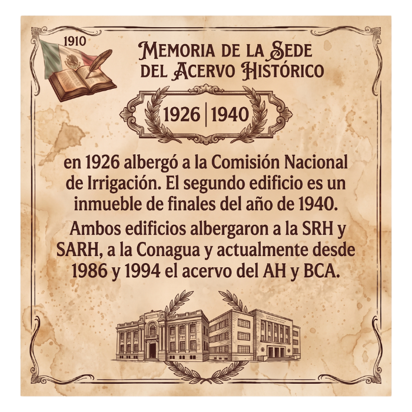

Entre ríos y cuencas, de generación en generación
A 100 años de la Comisión Nacional de Irrigación, el Archivo Histórico y Biblioteca Central del Agua conmemora un siglo de gestión, infraestructura y desarrollo hídrico en el país con una exposición fotográfica y un ciclo de pláticas semanales sobre la trayectoria y los retos institucionales en la transformación de la gestión del agua.
Cien años de historia, contados desde el archivo
El Archivo Histórico y Biblioteca Central del Agua (AHyBCA) de la Comisión Nacional del Agua (Conagua), en el marco de FestivAlMANAQUE —festival organizado por la Red de Bibliotecas y Archivos del Centro Histórico de la Ciudad de México—, conmemora el centenario de la Comisión Nacional de Irrigación con este encuentro. El objetivo es visibilizar y reconocer un siglo de gestión, infraestructura y desarrollo hídrico en el país, a través de una exposición fotográfica y un ciclo de pláticas semanales sobre la trayectoria y los retos institucionales en la transformación de la gestión del agua, con base en el acervo del AHyBCA.
Ese acervo resguarda la memoria histórica sobre la gestión, administración y manejo de los recursos hídricos e hidráulicos de México, generada por la CONAGUA y las instituciones que le antecedieron, con una temporalidad de 1558 a 2015: más de 240 mil expedientes organizados en siete fondos documentales y más de 30 mil referencias bibliográficas y hemerográficas en seis colecciones, resguardadas en un inmueble emblemático de finales del siglo XIX que albergó a la extinta Comisión Nacional de Irrigación, la SRH y la SARH.

Apertura del viernes 23 de octubre
Bienvenida, ciclo de pláticas e inauguración de la exposición
Sala de Consulta del AHyBCA — 11:00 a 13:00 horas.
Bienvenida
Anel Oceguera Vergara, Subgerenta de Relaciones Interinstitucionales y Cultura del Agua (CONAGUA), y representante de la Red de Bibliotecas y Archivos del Centro Histórico de la Ciudad de México.
Ciclo de pláticas
- “Conociendo el patrimonio documental del agua: fondos y colecciones del AHyBCA” — Jessica Erisbeth Ríos Alvarado / José Roberto Benítez Camacho
- “De los canales de tierra a los archivos digitales: cien años de política hídrica en México, 1926–2026” — Olga Manuel Castillo
- “El origen de la infraestructura hidráulica: la Comisión Nacional de Irrigación, 1926–1946” — José Guadalupe Rangel Mandujano
Exposición fotográfica “A 100 años de la Comisión Nacional de Irrigación”
Corte de listón inaugural.
Cierre del evento
Olga Manuel Castillo, Jefa de Proyecto y Coordinadora del AHyBCA.
Ciclo de pláticas semanales
Tras la apertura del 23 de octubre, el ciclo continúa cada viernes en la Sala de Consulta del AHyBCA, de 11:00 a 13:00 horas, hasta cerrar la conmemoración el 4 de diciembre.
“La huella de Adolfo Orive Alba en la CNI y SRH” — María Gabriela Vilchis Bernal - AHyBCA · “La Comisión del Río Papaloapan: política de desarrollo por cuencas, 1946–1984” — Jessica Erisbeth Ríos Alvarado - AHyBCA
“Memoria del Mundo de México-UNESCO: retos del AHyBCA” — Olga Manuel Castillo - AHyBCA · “Los inicios de la cooperación hídrica internacional en la CNI: transferencia tecnológica, fortalecimiento de capacidades y negociación transfronteriza” — Nohemí Flores González - AHyBCA
“Del surco a la gota: evolución de los sistemas de riego en México” — Eva Olivo Zavala - AHyBCA · “Mujeres y gestión hídrica: un análisis hemerográfico del Boletín del Archivo Histórico del Agua, 1994–2008” — Jesús Garrido Gática - AHyBCA
“De la CNI a la CONAGUA: evolución de las revistas de divulgación, 1926–2025” — José Roberto Benítez Camacho - AHyBCA · Reseña de libro (título por definir) — Alejandro Jiménez Serna - AHyBCA
“Los expedientes hablan: los aprovechamientos del Río Magdalena, siglos XVII–XIX” — José Guadalupe Mandujano - AHyBCA · “Las raíces del agua: importancia de las muestras de suelo en los proyectos de la Comisión Nacional de Irrigación, 1926–1946” — Alejandro Jiménez Serna - AHyBCA
“Patrimonio y cultura del agua: reflexiones al cierre del ciclo” — Anel Oceguera Vergara
Un adelanto de la exposición


Lo que resguardan el Archivo y la Biblioteca




Fondos documentales del Archivo Histórico
Colecciones de la Biblioteca Central del Agua
Reserva tu lugar
El cupo es limitado a 30 personas por sesión. Regístrate a través del formulario oficial para confirmar tu asistencia a la apertura del 23 de octubre o a cualquiera de las pláticas semanales.
Ir al formulario de registroArchivo Histórico y Biblioteca Central del Agua
Sala de Consulta
Calle de Balderas No. 94, Colonia Centro,
Alcaldía Cuauhtémoc, C.P. 06040, Ciudad de México.
Tel.: 55 5174 4000 ext. 2813 · 9:00 a 14:00 h
olga.manuel@conagua.gob.mx